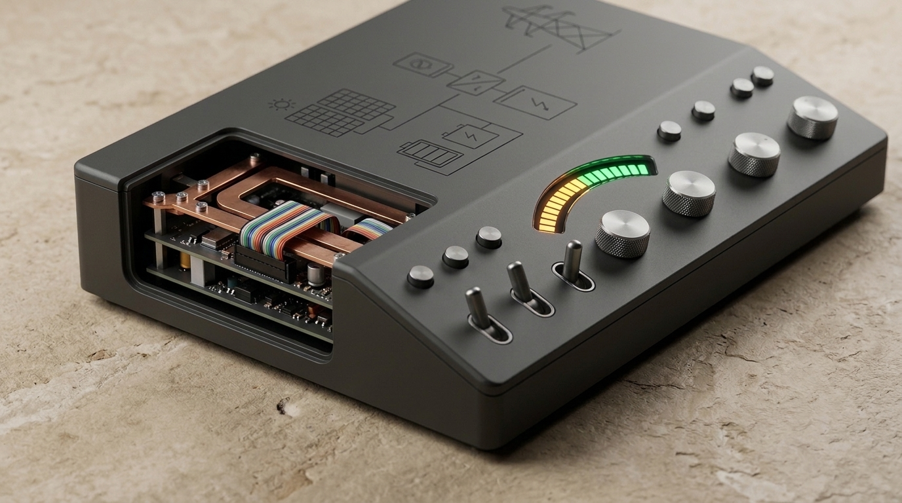

Shave feeder peak demand before simple-cycle gas peakers & rolling load-shed relays trip.
Stagnant high-pressure heat dome pushes afternoon ambient temperatures to 104°F while thermal generation derates and evening AC load spikes across ERCOT.

Pre-cool thermal mass between 13:00 and 15:30, defer 40A EV charging to 01:00 wind surplus, and lock out resistive dryer drums during 16:00 - 20:00.
Peak Window Demand Reduction
0.0% shaved-0.00 kW
19.65 kW baseline to 19.65 kW active
Time-of-Use Bill Arbitrage
$0.00
$0.00 / 30d
Marginal Peaker CO2 Avoided
0.00 kg
0.0 kg / 30d
Feeder Strain Index
91 / 100
CRITICAL: Critical Feeder Overload Risk (Baseline 91)
24-Hour Dual-Trace Demand Oscilloscope
Compares unshifted household peak profile (vermilion dashed) against active breaker and relay schedule (emerald solid).
Baseline Peak Curve
Active Shifted Bus
ERCOT Alert Window
Baseline
19.65 kW
Active Bus
19.65 kW
Interval Delta
-0.00 kW
Interval Tariff
$0.32/kWh